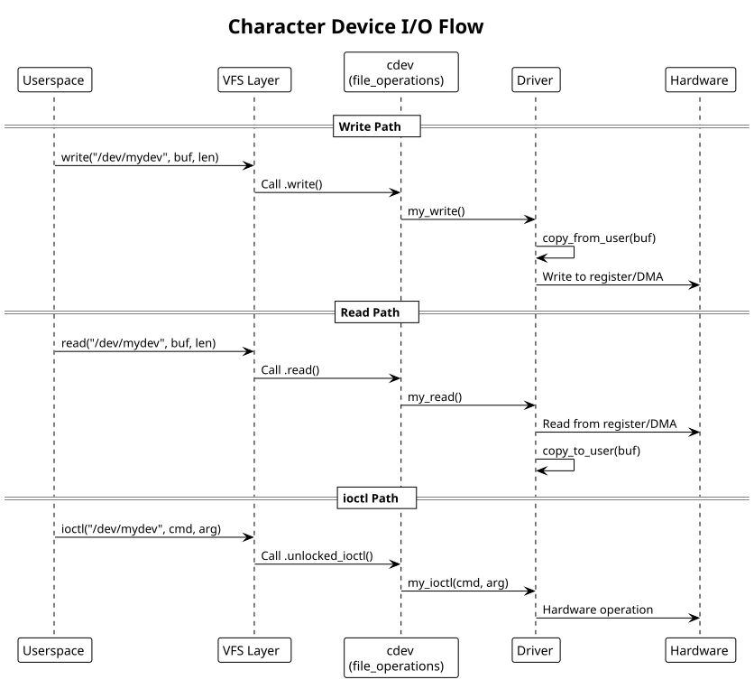

Character Drivers
Table of Contents
Character device drivers: device files, read/write, ioctl, mmap. Includes LED controller example.
1. Device File Interface
Character devices provide byte-stream I/O via device files (e.g., /dev/ttyUSB0, /dev/null).
Kernel exports device via cdev (character device) abstraction:
#include <linux/cdev.h>
#include <linux/fs.h>
struct my_dev {
struct cdev cdev;
dev_t devno;
struct device *device;
void __iomem *base;
spinlock_t lock;
};
static struct my_dev *global_dev = NULL;
2. File Operations
Kernel calls file_operations methods when userspace reads/writes/ioctls:
static long my_ioctl(struct file *filp, unsigned int cmd, unsigned long arg)
{
struct my_dev *dev = filp->private_data;
switch (cmd) {
case IOCTL_SET_LED:
// Copy from userspace
u32 val;
if (copy_from_user(&val, (void __user *)arg, sizeof(val)))
return -EFAULT;
// Write to hardware
writel(val, dev->base + LED_REGISTER);
break;
case IOCTL_GET_STATUS:
u32 status = readl(dev->base + STATUS_REGISTER);
if (copy_to_user((void __user *)arg, &status, sizeof(status)))
return -EFAULT;
break;
default:
return -ENOTTY;
}
return 0;
}
static ssize_t my_read(struct file *filp, char __user *buf, size_t count, loff_t *pos)
{
struct my_dev *dev = filp->private_data;
if (*pos >= 4) // 32-bit register
return 0;
if (count > 4 - *pos)
count = 4 - *pos;
u32 val = readl(dev->base + DATA_REGISTER);
if (copy_to_user(buf, &val, count))
return -EFAULT;
*pos += count;
return count;
}
static ssize_t my_write(struct file *filp, const char __user *buf, size_t count, loff_t *pos)
{
struct my_dev *dev = filp->private_data;
if (count > 4)
count = 4;
u32 val = 0;
if (copy_from_user(&val, buf, count))
return -EFAULT;
writel(val, dev->base + CMD_REGISTER);
*pos += count;
return count;
}
static int my_open(struct inode *inode, struct file *filp)
{
struct my_dev *dev = container_of(inode->i_cdev, struct my_dev, cdev);
filp->private_data = dev;
return 0;
}
static int my_release(struct inode *inode, struct file *filp)
{
return 0;
}
static const struct file_operations my_fops = {
.owner = THIS_MODULE,
.open = my_open,
.release = my_release,
.read = my_read,
.write = my_write,
.unlocked_ioctl = my_ioctl,
};
3. Device Registration
Register character device and create device file:
static int my_probe(struct platform_device *pdev)
{
struct my_dev *dev;
int ret;
dev = devm_kzalloc(&pdev->dev, sizeof(*dev), GFP_KERNEL);
if (!dev)
return -ENOMEM;
// Get memory resource
struct resource *res = platform_get_resource(pdev, IORESOURCE_MEM, 0);
dev->base = devm_ioremap_resource(&pdev->dev, res);
if (IS_ERR(dev->base))
return PTR_ERR(dev->base);
// Allocate device number (dynamic allocation preferred)
ret = alloc_chrdev_region(&dev->devno, 0, 1, "my_dev");
if (ret < 0) {
dev_err(&pdev->dev, "alloc_chrdev_region failed\n");
return ret;
}
// Initialize and add cdev
cdev_init(&dev->cdev, &my_fops);
dev->cdev.owner = THIS_MODULE;
ret = cdev_add(&dev->cdev, dev->devno, 1);
if (ret < 0) {
dev_err(&pdev->dev, "cdev_add failed\n");
unregister_chrdev_region(dev->devno, 1);
return ret;
}
// Create device file (/dev/my_dev_0)
dev->device = device_create(my_class, &pdev->dev, dev->devno,
dev, "my_dev_%d", 0);
if (IS_ERR(dev->device)) {
cdev_del(&dev->cdev);
unregister_chrdev_region(dev->devno, 1);
return PTR_ERR(dev->device);
}
platform_set_drvdata(pdev, dev);
dev_info(&pdev->dev, "device registered at /dev/my_dev_0\n");
return 0;
}
static int my_remove(struct platform_device *pdev)
{
struct my_dev *dev = platform_get_drvdata(pdev);
device_destroy(my_class, dev->devno);
cdev_del(&dev->cdev);
unregister_chrdev_region(dev->devno, 1);
return 0;
}
static struct class *my_class = NULL;
static int __init my_init(void)
{
my_class = class_create(THIS_MODULE, "my_dev");
if (IS_ERR(my_class))
return PTR_ERR(my_class);
platform_driver_register(&my_driver);
return 0;
}
static void __exit my_exit(void)
{
platform_driver_unregister(&my_driver);
class_destroy(my_class);
}
module_init(my_init);
module_exit(my_exit);
4. Example: LED Controller Driver
Simple LED controller with read/write and ioctl:
// led_controller.c
#include <linux/module.h>
#include <linux/platform_device.h>
#include <linux/cdev.h>
#include <linux/fs.h>
#include <linux/io.h>
#include <uapi/linux/ioctl.h>
#define LED_MAGIC 'L'
#define IOCTL_SET_BRIGHTNESS _IOW(LED_MAGIC, 1, u32)
#define IOCTL_GET_STATUS _IOR(LED_MAGIC, 2, u32)
struct led_dev {
struct cdev cdev;
dev_t devno;
void __iomem *base;
struct device *device;
};
#define LED_REG_CONTROL 0x00
#define LED_REG_STATUS 0x04
static long led_ioctl(struct file *f, unsigned int cmd, unsigned long arg)
{
struct led_dev *led = f->private_data;
if (cmd == IOCTL_SET_BRIGHTNESS) {
u32 val;
if (copy_from_user(&val, (void __user *)arg, sizeof(val)))
return -EFAULT;
writel(val & 0xFF, led->base + LED_REG_CONTROL);
} else if (cmd == IOCTL_GET_STATUS) {
u32 status = readl(led->base + LED_REG_STATUS);
if (copy_to_user((void __user *)arg, &status, sizeof(status)))
return -EFAULT;
} else {
return -ENOTTY;
}
return 0;
}
static const struct file_operations led_fops = {
.owner = THIS_MODULE,
.unlocked_ioctl = led_ioctl,
};
static const struct of_device_id led_dt_match[] = {
{ .compatible = "vendor,led-controller" },
{ },
};
MODULE_DEVICE_TABLE(of, led_dt_match);
static int led_probe(struct platform_device *pdev)
{
struct led_dev *led;
struct resource *res;
int ret;
led = devm_kzalloc(&pdev->dev, sizeof(*led), GFP_KERNEL);
if (!led)
return -ENOMEM;
res = platform_get_resource(pdev, IORESOURCE_MEM, 0);
led->base = devm_ioremap_resource(&pdev->dev, res);
if (IS_ERR(led->base))
return PTR_ERR(led->base);
alloc_chrdev_region(&led->devno, 0, 1, "led");
cdev_init(&led->cdev, &led_fops);
cdev_add(&led->cdev, led->devno, 1);
led->device = device_create(NULL, &pdev->dev, led->devno, led, "led");
platform_set_drvdata(pdev, led);
return 0;
}
static int led_remove(struct platform_device *pdev)
{
struct led_dev *led = platform_get_drvdata(pdev);
device_destroy(NULL, led->devno);
cdev_del(&led->cdev);
unregister_chrdev_region(led->devno, 1);
return 0;
}
static struct platform_driver led_driver = {
.driver = {
.name = "led-controller",
.of_match_table = led_dt_match,
},
.probe = led_probe,
.remove = led_remove,
};
module_platform_driver(led_driver);
MODULE_LICENSE("GPL");
MODULE_AUTHOR("Your Name");
MODULE_DESCRIPTION("LED controller driver");
5. Userspace Usage
// user_led_app.c
#include <fcntl.h>
#include <sys/ioctl.h>
#include <stdio.h>
#include <stdint.h>
#define LED_MAGIC 'L'
#define IOCTL_SET_BRIGHTNESS _IOW(LED_MAGIC, 1, uint32_t)
#define IOCTL_GET_STATUS _IOR(LED_MAGIC, 2, uint32_t)
int main() {
int fd = open("/dev/led", O_RDWR);
// Set brightness to 75%
uint32_t brightness = 192; // 75% of 255
ioctl(fd, IOCTL_SET_BRIGHTNESS, &brightness);
// Read status
uint32_t status;
ioctl(fd, IOCTL_GET_STATUS, &status);
printf("LED status: 0x%x\n", status);
close(fd);
return 0;
}
6. Character Device I/O Flow Diagram

7. Common Patterns
- Use
devm_*allocators for automatic cleanup - Always check
copy_to_user()andcopy_from_user()return values - Use
container_of()to recover device struct from cdev - Handle partial reads/writes with loff_t
- Use device classes for automatic /dev creation